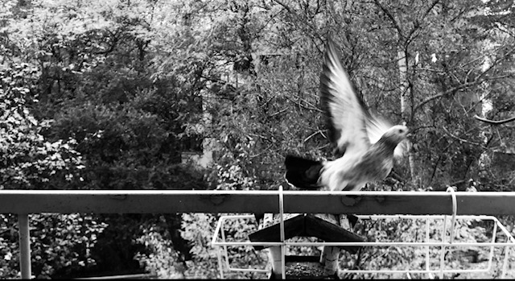
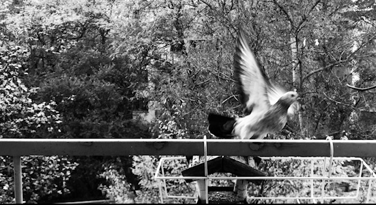

Babi

A teď tu sedím a na sobě mám babičky krimplenový béžový šaty s bledě modrýma růžema a jsou mi skoro přesně. Ale ty je nebudeš nosit viď? A já v tom okamžiku přisahám a chci věřit, že budu. Jsou starý stejně jako já a jsou krásný. Jenomže je rok 2012 a babičce je 83 let. Vyperu je, odpovídám. Máš něco k jídlu babi? Úplně se rozzáří. Kolik se asi nadělala těch domácích nudlí, pod kterejma byl schovanej obrázek na dně talíře? Uměla jsem je jako malá, sušili jsme je po židlích. Je rok 2020 a babička dnes umřela.
Vidím tu prostornou světlou velikou kuchyň v bývalé vile vedle kravína, kde odpad z umyvadla stékal po zadní části domu dolů do kopřiv… dva dřezy v mycáku plné nádobí a babičky udřené ruce spařené od horké vody. Vidím, jak jde každý všední den po ranní šichtě v kravině dolů do krámu a zpět nosí celý velký bochník chleba, máslo. Máslo butter, táta fotr, naváděla si nás babi. Byla jsi městské dítě. A skončila jsi na statku.
Slyším tikat ty hlučné kukačky… a vidím dědu u stolu jak odhrne záclonku, přimhouří oči a řekne jede šestka… a v dohledu přes silnici u baráku paní Kindlové zastaví autobus. Sedávali jsme v něm na zadních sedadlech a vychutnávali ten hup těsně před Děpoltovicema, když se kopec zlomil… a autobus jakoby chvíli letěl… V ložnici byla zima a v peřině schovaná zapnutá elektrická dečka. V létě tam voněl med ze včelína, který stál pod oknem. Babi přimluv se tam nahoře za Kubu. Vím, že jsi se mnou měla soucit, že jsi mě měla ráda. A já Tebe. Mám dnes na sobě rozkvetlý pyžamo, samej květ. Vlastně je dost podobný těm šatům babi…
Kubásek ještě spinká a já vím, že té nemoci se nemůžeme vyhnout, pokud chceme žít. Nevím, co nás babi čeká, ale dám si štrúdl, co jsem včera upekla a dnes je takový hezky mokrý a dobrý. Je mi ticho, které se tu rozprostřelo po vyslovení slova smrt.
Říkám si, co mi asi posíláš za vzkaz a čtu: Bůh odhaluje hlubiny a skryté věci… v Heslech jednoty bratrské, které si mi radostně a spontánně vtiskla do ruky, když jsme se viděly naposledy. Nádhernej věk babi. Devadesátjedna. Doufám, že se ho nedožiju. Ani já, ani Kuba. Do poslední chvíle jsi pletla ponožky, které u nás doma nosíme každý den. A pak jsi odešla. Klidná, hodná a smířená, jak řekla mámě sestřička. Odpočívej v pokoji babi. S Bohem.
Všichni jsme si ten den oblékli ty pletený ponožky, dali nohy na stůl a nalili si víno. Už podruhé za tento rok jsem si všimla, jak nás pozůstalé smrt spojuje. Poprvé u táty, u toho táty, který nás za života spíš rozděloval. Nešťastná povaha řekla bych, jenomže povahu si s sebou neberete. Tam si smíte vzít jen to nejcennější.
Jak vypadala mami? Ptám se. Krásně. A já se dívám na ty posmrtné fotky a vidím, že babička v té skořápce už není. Není tam prostě. Přišla se na mě podívat jako nádherná holubička s takovým grošováním kolem krku, jako by tam měla krajku. A podle toho jsem Tě taky babi poznala. Nasypala jsem do krmítka. A znovu mrkla do hesel jednoty bratrské…
DEJ SE DO PRÁCE, NECHŤ JE S TEBOU HOSPODIN.
A to máš pravdu babi…
 
